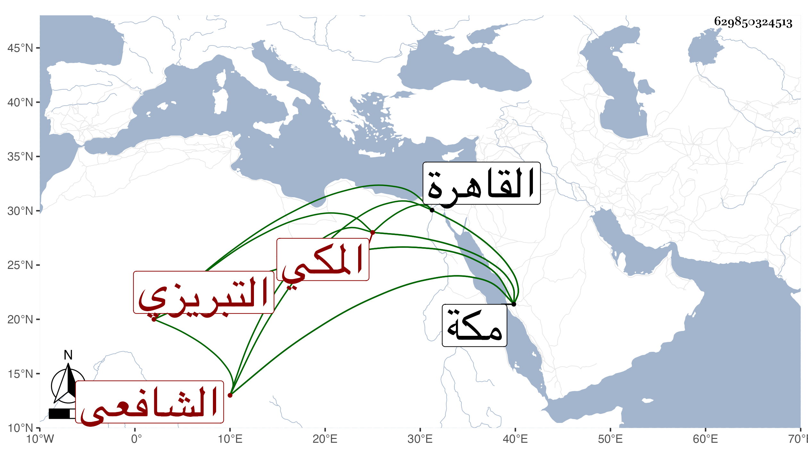

0902Sakhawi.DawLamic.ITO20230111-ara1.EIS1600.629850324513
Biography ID: 629850324513
875
نور الله بن خوارزم بن محمد الكمال أبو محمد بن البرهان بن الصدر التبريزي ثم المكي الشافعي . مذكور بما لا أثبته لكنه ممن أخذ عن الخيضري فذكره لابن الزمن حتى استقر به عقب الشمس المسيري في مشيخة رباط السلطان بمكة وأفحش في حقه ابن ناصر والجيزي الأزهري الناسخ وغيرهما وآل الأمر إلى أن تعصب مولى لابن الزمن هو وابن أخيه حتى أخرج الجيزي المشار إليه بعد أمر القاضي شخصا يسمى أبا بكر بتحليف هذا عند الحجر الأسود بأنه يعتقد تقديم أبي بكر ثم عمر على علي رضي الله عنهم فكانت نادرة لمطابقتها ما هو على الألسنة رافضي ويحلف بأبي بكر ، وما كان خروج الجيزي موافقا لغرض القاضي ، وبالجملة فنور الله فيه قوادح ، وقد سمع مني بمكة المسلسل وغيره ثم قدم القاهرة وكذا أخصامه ورجع خائبا وما نهض الخيضري لتأييده .
